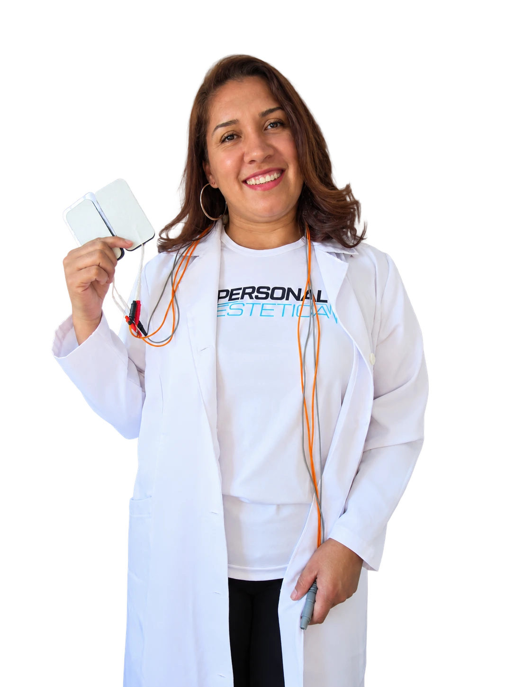
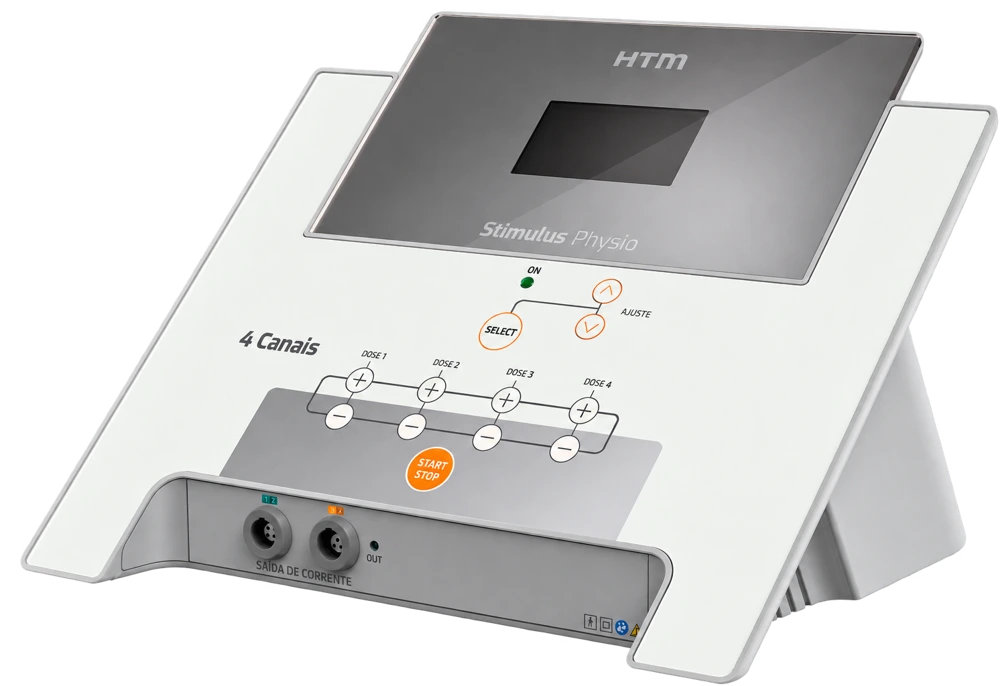
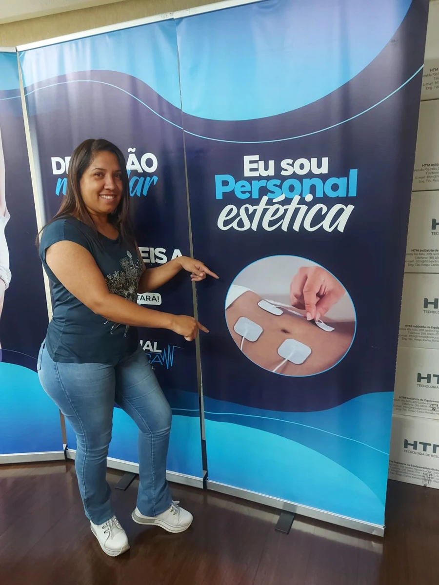

ESTÉTICA, TECNOLOGIA & CUIDADO
Seu momento
de se cuidar
começa em casa.
Um encontro com o seu bem-estar.
Atendimento personalizado com EZBODY,
no conforto do seu espaço.
Seu corpo. Seu tempo.
Seu cuidado.

01 / CONHEÇA O EZBODY
TECNOLOGIA COM PROPÓSITOTecnologia que acompanha
o seu cuidado.
O EZBODY combina eletroestimulação muscular e exercícios orientados. Uma experiência adaptada aos seus objetivos, com atenção a quem você é.

TECNOLOGIA + ACOMPANHAMENTO INDIVIDUALCOMO FUNCIONA
Estímulo para o corpo.
Atenção para você.
Impulsos elétricos controlados estimulam contrações musculares por meio de eletrodos. A intensidade e os exercícios consideram sua avaliação e suas necessidades.
Ativação muscular
Estímulo muscular associado ao movimento orientado.
Seus objetivos, respeitados
Condicionamento e definição como objetivos possíveis, sem promessas de resultados.
Cuidado que cabe na rotina
Acompanhamento próximo no conforto de casa.
02 / O CUIDADO VAI ATÉ VOCÊ
MENOS DESLOCAMENTO. MAIS TEMPO PARA SI.Sua rotina não
precisa parar.
Você merece
esse momento.
Juliana leva até você uma experiência de cuidado personalizada, unindo tecnologia, acolhimento e praticidade.
Consultar disponibilidadeO primeiro passo é seu.
Conte sobre seus objetivos pelo WhatsApp e consulte valores, localização e disponibilidade.
Cuidado começa com escuta.
A avaliação considera suas necessidades e a adequação do atendimento ao seu momento.
Seu tempo de se cuidar.
Com o atendimento combinado, receba acompanhamento profissional no conforto de casa.

03 / QUEM CUIDA DE VOCÊ
Por trás de cada
atendimento,
cuidado de verdade.
Desde 2021, Juliana Souza dedica seu trabalho à estética e ao bem-estar. Profissional certificada, acredita que o autocuidado deve ser um momento de acolhimento, confiança e reconexão com a própria autoestima.
Seu propósito é ajudar cada cliente a reservar um tempo para si, com atenção individualizada e respeito à sua história.
Individualizado
UM LEMBRETE PARA VOCÊ
Todas merecem
se cuidar.
Entre tantos compromissos, cuidar de si
também merece espaço na sua rotina.
04 / CADA HISTÓRIA É ÚNICA
Seu cuidado.
Sua trajetória.
O acompanhamento respeita seus objetivos e sua individualidade. Converse com Juliana para entender o que faz sentido para o seu momento.
Resultados individuais podem variar.
Conhecer o atendimento05 / UMA CONVERSA ABERTA
Antes de começar,
vamos esclarecer.
Informação também faz parte do cuidado.
Ficou com uma dúvida? Fale comigoO que é o EZBODY?+
É um método que combina eletroestimulação muscular e exercícios orientados. O protocolo é definido conforme a avaliação individual.
Como funciona o atendimento em casa?+
Entre em contato para consultar localização e disponibilidade. Juliana explica como preparar o espaço e combina os detalhes do atendimento com você.
Eletroestimulação ajuda a emagrecer?+
Mudanças na composição corporal dependem de vários fatores, como hábitos, alimentação e atividade física. O uso do equipamento, por si só, não garante emagrecimento ou redução de medidas.
Qual a diferença para a musculação?+
A eletroestimulação utiliza impulsos elétricos para estimular contrações musculares, enquanto a musculação trabalha com resistência. Não existe equivalência automática entre sessões ou substituição universal de uma prática pela outra.
Quem pode realizar? Existem contraindicações?+
A indicação depende de avaliação individual. Informe condições de saúde, gestação, dispositivos implantados e tratamentos em andamento antes de agendar. Quando necessário, a profissional orientará a busca por avaliação de saúde.
Quantas sessões são necessárias?+
Duração, frequência e número de sessões dependem da avaliação e dos seus objetivos. Valores e disponibilidade são informados diretamente por Juliana.
SEU CORPO. SEU TEMPO. SEU CUIDADO.
Você também merece
esse momento.
Uma forma de incluir o autocuidado na sua rotina,
com atenção personalizada no conforto de casa.